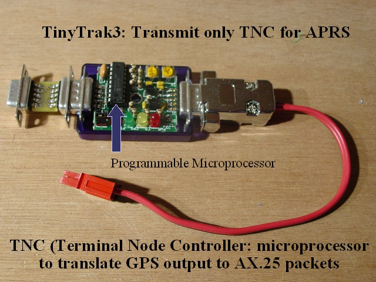

Notes:
The heart of both the trackers above it the TinyTrack, a transmit only TNC that takes raw GPS data from a GPS receiver, formats it as amateur radio packets, and sends them on to a radio. The TinyTrack is a one way TNC, it can't decode packets received from the radio. The TinyTrak is built around a programmable microprocessor and can be connected to a computer to program in the operator's call sign, frequency of transmission, and other APRS parameters.
The TinyTrackIII shown here is connected to a wiring harness for programming by a computer. A 12 volt power supply is connected to one end and a 9 pin serial gender changer is connected to the other end for connection to a computer's serial port.